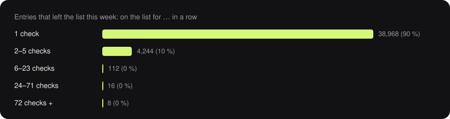
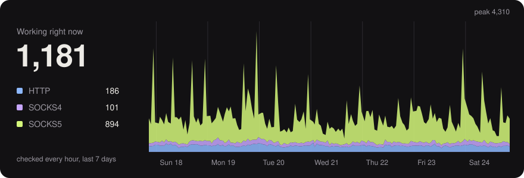

The week in free proxies
Oct 24 – Oct 31, 2026 · 171 checks, about one an hour · updated with every run
Oct 24 – Oct 31, 2026 · 171 checks, about one an hour · updated with every run
32,113 different type://ip:port entries passed every check at least once (many are ports on the same host). Of the 31,297 that left the list again, 89 % were not on the next list, and 25 (under 0.1 %) had been on it for 24 runs in a row (about a day) or more. 50 proxies on the list right now have been on it for 24 runs in a row or more.
In the last run Google let 51 % of the 355 HTTPS-capable proxies that gave a clear answer through – 33 % of datacenter exits, 83 % of the other exits.
In the last run Reddit let 53 % of the 368 HTTPS-capable proxies that gave a clear answer through – 38 % of datacenter exits, 77 % of the other exits.
In the last run Amazon let 27 % of the 392 HTTPS-capable proxies that gave a clear answer through – 32 % of datacenter exits, 19 % of the other exits.
In the last run Instagram let 16 % of the 383 HTTPS-capable proxies that gave a clear answer through – 4 % of datacenter exits, 37 % of the other exits.
In the last run TikTok let 63 % of the 343 HTTPS-capable proxies that gave a clear answer through – 79 % of datacenter exits, 32 % of the other exits.
In the last run Discord let 96 % of the 370 HTTPS-capable proxies that gave a clear answer through – 99 % of datacenter exits, 91 % of the other exits.
Between 326 and 3,301 entries were on the list at any one time. Right now: 816, 62 % of them tunnel HTTPS to the test host, 48 % are datacenter exits (the provider name looks like a hosting company).
Downloading 100 KB through the HTTPS-capable ones, counting the downloads that finished: half manage 81 KiB/s or more, the fastest tenth over 142 KiB/s.
Most exit IPs are in United States (127), France (117), Germany (89), India (76), China (75).

